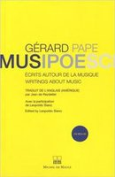

Gallery




Composer of contemporary and electronic music, psychoanalyst, and former director of the CCMIX (ex UPIC center in Paris).
Gérard Pape was born in New York in 1955 into an Italian-American family. A composer and Lacanian psychoanalyst, he has lived in Paris since 1991. From 1991 to 2007, he directed the UPIC/CCMIX Workshops (Iannis Xenakis Centre for Musical Creation), a computer music centre founded by composer Iannis Xenakis. In 2008, he founded the CLSI (Circle for the Liberation of Sound and Image) in Paris, of which he is the artistic director. This collective of musicians uses both computers and acoustic instruments and also produces concerts and festivals. Desire, excess, the body, and pleasure are at the heart of his research into new forms of opera and musical theatre. He is the author of two books: MusiPoeSci. Des écrits sur la musique, edited by Leopoldo Siano (Éditions Michel De Maule, 2015), and Iannis Xenakis et l’éthique de l’originalité absolue (Uteurp, 2023), among his publications. Since 2000, Gérard Pape has composed several works inspired by Antonin Artaud’s concept of total theatre or “theatre of cruelty”, including the opera Les Cenci (2000–2005), Artaud Variations (2022–2025), and Artaud le Mômo (2020–2025). A concert-meeting took place on 28 November at the Hermann Nitsch Museum in Naples, dedicated to a dialogue between the theatrical worlds of Artaud and Nitsch. (Hermann Nitsch considered Artaud a kind of “spiritual brother”.) The programme included the world premiere of the new version of Artaud le Mômo, a musical theatre work by Pape based on Antonin Artaud’s text of the same name. The piece featured “ritual acts of speech and sound for narrator, actress, double bass, percussion, and pre-recorded electroacoustic sounds”. Pape’s first monographic CDs were released by Mode Records in 1992, 1998, and 2006. Another monographic CD was released in 2007 on Iancu Dumitrescu’s label, Edition Modern. Two new monographic CDs of his music were released in 2015 by Stradivarius Records and Mode Records. A bilingual book bringing together Pape’s writings as well as musicological texts about his work, MUSIPOESCI, was published in 2015 by Éditions Michel de Maule in Paris. In 2015, Pape was commissioned by the Sonar Quartet (Berlin), with funding from the Ernst von Siemens Foundation, to compose his 4th string quartet, TEXTURES TURBULENTES, FORMES ÉMERGENTES. The work was premiered in Berlin on 11 December 2016. A revised new version, incorporating more electronics and fixed sounds, was premiered by the Neo Quartet in Gdańsk (Poland) on 10 September 2022. In 2019, musicologist Lissa Meridan completed and published a doctoral thesis on Pape’s work entitled Harmonies of Time and Timbre. Pape’s mega-opera Le Purgatoire (inspired by Dante), lasting more than 7 hours, was released digitally worldwide on the MUSICA PRESENTE label (Rome) in December 2021. The work has been streamed more than 54,000 times worldwide. Further CDs and DVDs of Pape’s music were released in 2022: a box set containing two of his major electronic works, HELIOPHONIE, released by Mode Records (New York), and a box set entitled Le Purgatoire, including the complete opera, now available as a three-DVD film, as well as two CDs featuring many other works for voice, instruments, and electronics composed between 1994 and 2022.
His music is strongly influenced by:
• Iannis Xenakis (computational and stochastic composition)
• Julio Estrada (sound fantasies and psychoacoustic structures)
• Gérard Grisey (spectral music aesthetics)
• Luigi Nono (experimental political sound language)
He often describes music as a transformation of internal “sound fantasies” into structured sonic systems.
His compositions combine acoustic instruments, electronics, tape, and computer systems. A major focus of his work is the transformation of timbre over time, often using chaotic or algorithmic processes.
He is also known for creating long evolving sound structures where textures constantly mutate without returning to a fixed state.
Feu toujours vivant (1997) – orchestral + samplers
Monologue (1995) – chamber opera based on Beckett
Cosmos (1985) – symphonic work + tape
Makbénach series – electronic + instrumental transformations
Le Fleuve du désir – multi-part electroacoustic cycle
Les Cenci – opera based on Antonin Artaud

Gérard Pape has worked with ensembles such as Art Zoyd and orchestras like the Orchestre National de Lille.
He has also collaborated with visual artists for multimedia works combining sound, video, and light installations.
His work has influenced contemporary electroacoustic composers and researchers in computer music, particularly in the field of sound transformation and psychoacoustic composition.
Listen & watch selected works:
🎥 YouTube search: Gérard Pape - YouTube
🎧 Discography (Mode Records / recordings): Official recordings
📚 Reference biography: Wikipedia entry
You can find the list of works by Gerard Pape here:
IMSLP website: Wikipedia entry